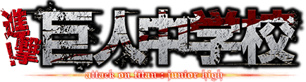
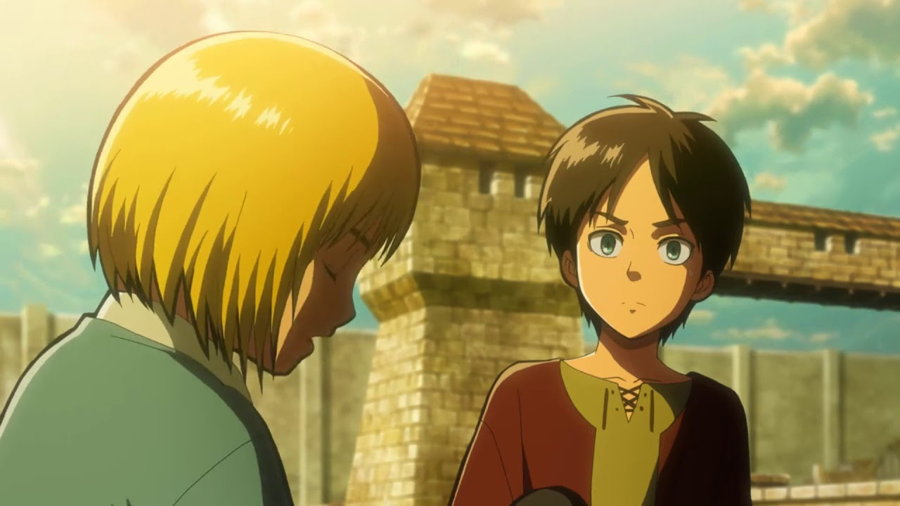
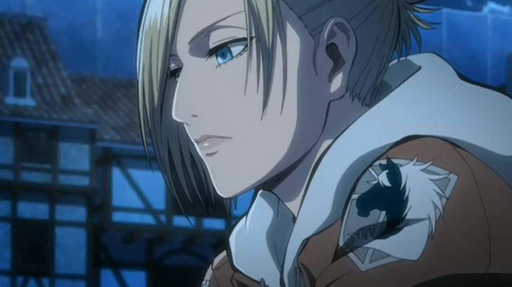
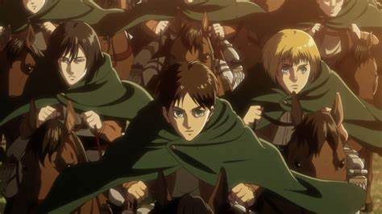
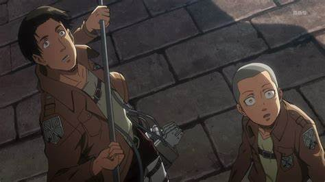
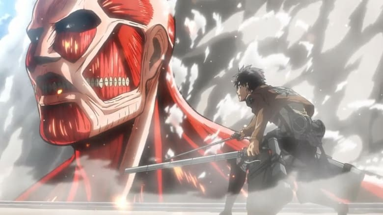

SHINGEKI NO KYOJIN
- Tipo: Serie
- Genero: Shōnen
- Emitido: Abr 6 de 2013 a Sep 28 de 2013
- Estado: Concluido
La historia nos traslada a un mundo en el que la humanidad estuvo a punto de ser exterminada cientos de años atrás por los Titanes. Los Titanes son seres enormes, parecen no ser inteligentes y devoran humanos. Lo peor es que parece que lo hacen por placer y no por alimentarse. Una pequeña parte de la humanidad ha conseguido sobrevivir protegiéndose con unos altísimos muros, más altos que el mayor de los Titanes. La ciudad vive su vida tranquila, y hace más de 100 años que ningún Titan aparece por allí. Eren y Mikasa son todavía unos adolescentes cuando ven algo horroroso: un Titan mucho mayor que todos los que la humanidad había conocido hasta el momento está destruyendo los muros de la ciudad, en ese momento la humanidad volverá a recordar el terror.
CAPITULOS




